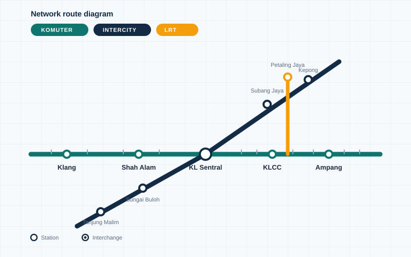

Member 4 · Fare Management
Station Management
The station register that every fare rule, gate device and fare calculation refers to.
Stations configured
10
Across 3 lines
Active stations
9
1 in maintenance
Interchanges
4
KL Sentral, Subang Jaya, Sungai Buloh, BTS
Average daily entries
9,480
Per station · weekday
Add a station
Register a new stop on the network. Station codes must be unique.
Station listing
All stations on the network, ordered by line position.
| Station ID | Station name | Code | Location | Status | |
|---|---|---|---|---|---|
| STN-KL01 | KL SentralInterchange | KLS | Brickfields, Kuala Lumpur | Active | |
| STN-KL02 | KLCCUnderground | KLC | Jalan Ampang, Kuala Lumpur | Active | |
| STN-PJ03 | Petaling JayaSurface | PJY | Jalan Utara, Selangor | Active | |
| STN-SJ04 | Subang JayaInterchange | SBJ | Jalan SS 15, Selangor | Active | |
| STN-SA05 | Shah AlamSurface | SA2 | Seksyen 7, Selangor | Active | |
| STN-KG06 | KlangTerminal | KLG | Jalan Besar, Selangor | Active | |
| STN-SB07 | Sungai BulohInterchange | SGB | Jalan Kuala Selangor, Selangor | Active | |
| STN-BT08 | Bandar Tasik SelatanInterchange | BTS | Jalan Tasik Selatan, Kuala Lumpur | Active | |
| STN-KP09 | Kepong SentralSurface | KPS | Jalan Kepong, Kuala Lumpur | Maintenance | |
| STN-TM10 | Tanjung MalimTerminal | TGM | Jalan Stesen, Perak | Active |
Network composition
- Total stations
- 10
- Interchanges
- 4
- Terminals
- 2
- Underground
- 1
- Maintenance
- 1
- Longest segment
- 74.5 km
- Shortest segment
- 6.4 km
Network route diagram
Three lines · four interchanges

Schematic only — interchanges at KL Sentral, Subang Jaya, Sungai Buloh and Bandar Tasik Selatan.
Station codes in use
Codes appear on printed tickets, gate displays and fare records.
Maintenance window
Platform resurfacing · 18 Nov – 30 Nov 2026. Trains pass without stopping; gates are powered down and no fares are collected at this station.